微信公众号[深容Pubmed文献检索] 1. 此处右键：选菜单【翻成中文（简体）】 2. 翻译后，此处右键：选菜单【打印...】成PDF格式
建议屏幕分辨率：1920X1080；如果屏幕太小，可以按Ctrl + 或 Ctrl -缩放网页。

Software Construction
Chapter 10: Concurrent and Distributed
Programming
10.1 Concurrency and Thread-Safety
Xu Hanchuan
xhc@hit.edu.cn
May 21, 2019

课程章节安排
第一章(4学时)
软件构造基础
实验1
第二章(4学时)
软件构造过程
实验(28学时)
10.1 Concurrency and Thread-Safety
实验2
第三章(12学时)
ADT+OOP
第五章(6学时)
面向可复用性的构造
实验3
第六章(6学时)
面向可维护性的构造
第七章(8学时)
面向健壮性的构造
实验4
第四章(0学时)
面向可理解性的构造
实验5
第八章(6学时)
面向性能的构造技术
第九章(0学时)
代码重构
第十章(6学时)
并行/分布式/GUI
实验6

Outline
10.1 Concurrency and Thread-Safety
▪ What is Concurrent Programming?
▪ Processes, threads, and time-slicing
▪ Interleaving and race condition
▪ Thread safety
– Strategy 1: Confinement
– Strategy 2: Immutability
– Strategy 3: Using Thread-safe Data Types
– Strategy 4: Locks and Synchronization
▪ How to Make a Safety Argument
▪ Summary

Software Construction
1 What is Concurrent Programming?

Concurrency
10.1 Concurrency and Thread-Safety
▪ Concurrency means multiple computations are happening at the
same time. 并发意味着多个运算同时发生
▪ Concurrency is everywhere in modern programming:
– Multiple computers in a network
– Multiple applications running on one computer
– Multiple processors in a computer (today, often multiple processor cores
on a single chip)
▪ Concurrency is essential in modern programming:
– Web sites must handle multiple simultaneous users.
– Mobile apps need to do some of their processing on servers (“in the
cloud”).
– Graphical user interfaces almost always require background work that
does not interrupt the user. For example, Eclipse compiles your Java code
while you’re still editing it.

Why “Concurrency”?
10.1 Concurrency and Thread-Safety
▪ Processor clock speeds are no longer increasing. 处理器时钟速度不
再增加。
▪ Instead, we’re getting more cores with each new generation of
chips. 新一代芯片都会有更多的内核
▪ So in the future, in order to get a computation to run faster, we’ll
have to split up a computation into concurrent pieces. 为了让计算更
快运行，我们必须将计算分解为并发模块。
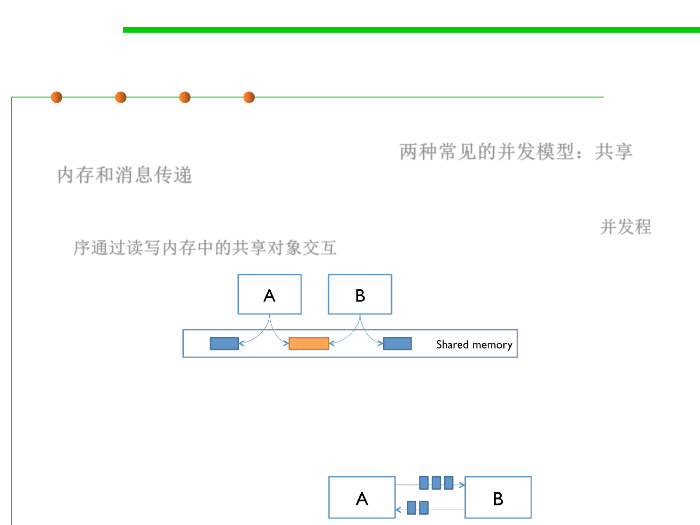
10.1 Concurrency and Thread-Safety
Two Models for Concurrent Programming
▪ There are two common models for concurrent programming:
shared memory and message passing . 两种常见的并发模型：共享
内存和消息传递
– Shared memory. In the shared memory model of concurrency, concurrent
modules interact by reading and writing shared objects in memory. 并发程
序通过读写内存中的共享对象交互
– Message passing. In the message-passing model, concurrent modules
interact by sending messages to each other through a communication
channel. Modules send off messages, and incoming messages to each
module are queued up for handling.
Shared memory
10.1 Concurrency and Thread-Safety
▪ Examples of the shared-memory model:
– A and B might be two processors (or processor cores) in the same
computer, sharing the same physical memory. 两个处理器共享物理内存
– A and B might be two programs running on the same computer, sharing a
common file system with files they can read and write. 两个程序共享文件
– A and B might be two threads in the same Java program (we’ll explain
what a thread is below), sharing the same Java objects. 两个线程共享对象
Message passing
10.1 Concurrency and Thread-Safety
▪ Examples of message passing:
– A and B might be two computers in a network, communicating by
network connections. 网络中两台计算机通信
– A and B might be a web browser and a web server – A opens a connection
to B and asks for a web page, and B sends the web page data back to A.
web浏览器和web server
– A and B might be an instant messaging client and server. 即时消息的客户
端和服务器
– A and B might be two programs running on the same computer whose
input and output have been connected by a pipe, like “ls | grep” typed
into a command prompt. 通过管道连接两个程序的输入和输出

Software Construction
2 Processes, Threads, Time-slicing

Process and Threads
10.1 Concurrency and Thread-Safety
▪ The message-passing and shared-memory models are about how
concurrent modules communicate.
▪ The concurrent modules themselves come in two different kinds:
processes and threads, two basic units of execution.并发模块本身主
要分为两种类型:进程和线程
– A process is an instance of a running program that is isolated from other
processes on the same machine. In particular, it has its own private section
of the machine’s memory. 进程是正在运行程序的一个实例，拥有自己私有
专用的内存空间
– A thread is a locus of control inside a running program. Think of it as a
place in the program that is being run, plus the stack of method calls that
led to that place (so the thread can go back up the stack when it reaches
return statements). 线程是正在运行程序的一个执行路径（一个进程可对应
多个线程），线程有自己的堆栈和局部变量，但是多个线程共享内存空间

Software Construction
(1) Process

Process
10.1 Concurrency and Thread-Safety
▪ The process abstraction is a virtual computer (a self-contained
execution environment with a complete, private set of basic run-time
resources, in particular, memory space). 进程可抽象为虚拟计算机，
拥有独立的执行环境和完整的资源
– It makes the program feel like it has the entire machine to itself – like a
fresh computer has been created, with fresh memory, just to run that
program.
▪ Just like computers connected across a network, processes
normally share no memory between them. 进程间通常不共享内存
– A process can’t access another process’s memory or objects at all. 进程不能
访问其他进程的内存或对象
– Sharing memory between processes is possible on most operating systems,
but it needs special effort. 需要特殊机制才能实现进程间共享内存
– By contrast, a new process is automatically ready for message passing,
because it is created with standard input & output streams, which are the
System.out and System.in streams you’ve used in Java. 进程通信采用的是消
息传递方式（因采用标准I/O 流）

Process
10.1 Concurrency and Thread-Safety
▪ Processes are often seen as synonymous with programs or
applications.
▪ However, what the user sees as a single application may in fact be
a set of cooperating processes. 应用程序实际上可能是一组协作进程
▪ To facilitate communication between processes, most operating
systems support Inter Process Communication (IPC) resources,
such as pipes and sockets. 为了实现进程间通信，大多数操作系统都
支持”进程间通信（IPC）资源”，例如pipe和socket。
– IPC is used not just for communication between processes on the same
system, but processes on different systems.
▪ Most implementations of the Java virtual machine run as a single
process. Java虚拟机本身的大多数实现都是作为单个进程运行的
▪ A Java application can create additional processes using
a ProcessBuilder object.

Software Construction
(2) Thread
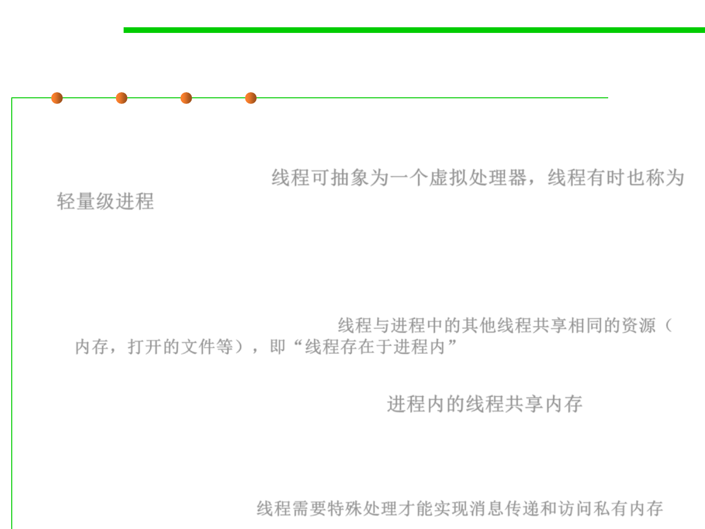
10.1 Concurrency and Thread-Safety
Thread and Multi-threaded programming
▪ Just as a process represents a virtual computer, the thread abstraction
represents a virtual processor, and threads are sometimes
called lightweight process 线程可抽象为一个虚拟处理器，线程有时也称为
轻量级进程
– Making a new thread simulates making a fresh processor inside the virtual
computer represented by the process.
– This new virtual processor runs the same program and shares the same
resources (memory, open files, etc) as other threads in the process, i.e.,
“threads exist within a process”. 线程与进程中的其他线程共享相同的资源（
内存，打开的文件等），即“线程存在于进程内”
▪ Threads are automatically ready for shared memory, because threads
share all the memory in the process. 进程内的线程共享内存
– It takes special effort to get “thread-local” memory that’s private to a single
thread.
– It’s also necessary to set up message-passing explicitly, by creating and using
queue data structures. 线程需要特殊处理才能实现消息传递和访问私有内存

Threads vs. processes
10.1 Concurrency and Thread-Safety
▪ Threads are lightweight
Processes heavyweight
▪ Threads share address space
Processes have own
▪ Threads require synchronization
Processes don’t
– Threads hold locks while mutating objects
▪ It’s unsafe to kill threads
Safe to kill processes

Why use threads?
10.1 Concurrency and Thread-Safety
▪ Performance in the face of blocking activities 解决阻塞活动时的性能
– Consider a web server
▪ Performance on multiprocessors
▪ Cleanly dealing with natural concurrency
▪ In Java threads are a fact of life
– Example: garbage collector runs in its own thread
Number of Threads
1
2
3
4
Seconds to run
22.0
13.5
11.7
10.8
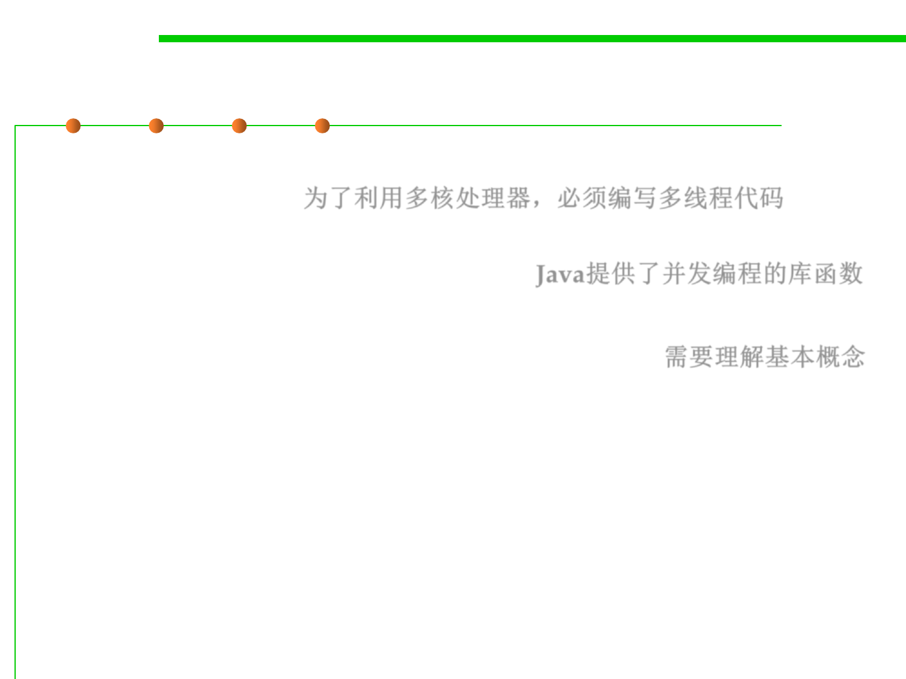
10.1 Concurrency and Thread-Safety
We are all concurrent programmers …
▪ In order to utilize our multicore processors, we must write
multithreaded code 为了利用多核处理器，必须编写多线程代码
▪ Good news: a lot of it is written for you Java提供了并发编程的库函数
– Excellent libraries exist (java.util.concurrent)
▪ Bad news: you still must understand fundamentals 需要理解基本概念
– to use libraries effectively
– to debug programs that make use of them
Thread States
10.1 Concurrency and Thread-Safety
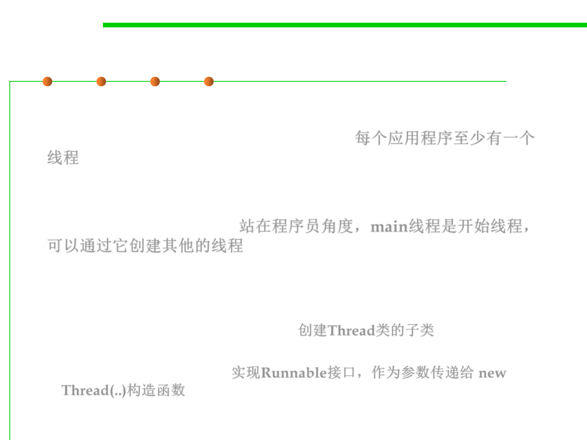
Thread
10.1 Concurrency and Thread-Safety
▪ Multithreaded execution is an essential feature of the Java platform.
▪ Every application has at least one thread. 每个应用程序至少有一个
线程
▪ From the application programmer‘s point of view, you start with just
one thread, called the main thread. This thread has the ability to
create additional threads. 站在程序员角度，main线程是开始线程，
可以通过它创建其他的线程
▪ Two ways to create a thread:
– (Seldom used) Subclassing Thread. 创建Thread类的子类
– (More generally used) Implement the Runnable interface and use the new
Thread(..) constructor. 实现Runnable接口，作为参数传递给 new
Thread(..)构造函数
Ways to create a thread
10.1 Concurrency and Thread-Safety
▪ All threads should implement the Runnable interface and
implement the run() method. 所有的线程都需要实现Runnable接
口，并实现run()方法
▪ The Runnable interface represents the work to be done by a
thread.
public interface Runnable {
void run();
}
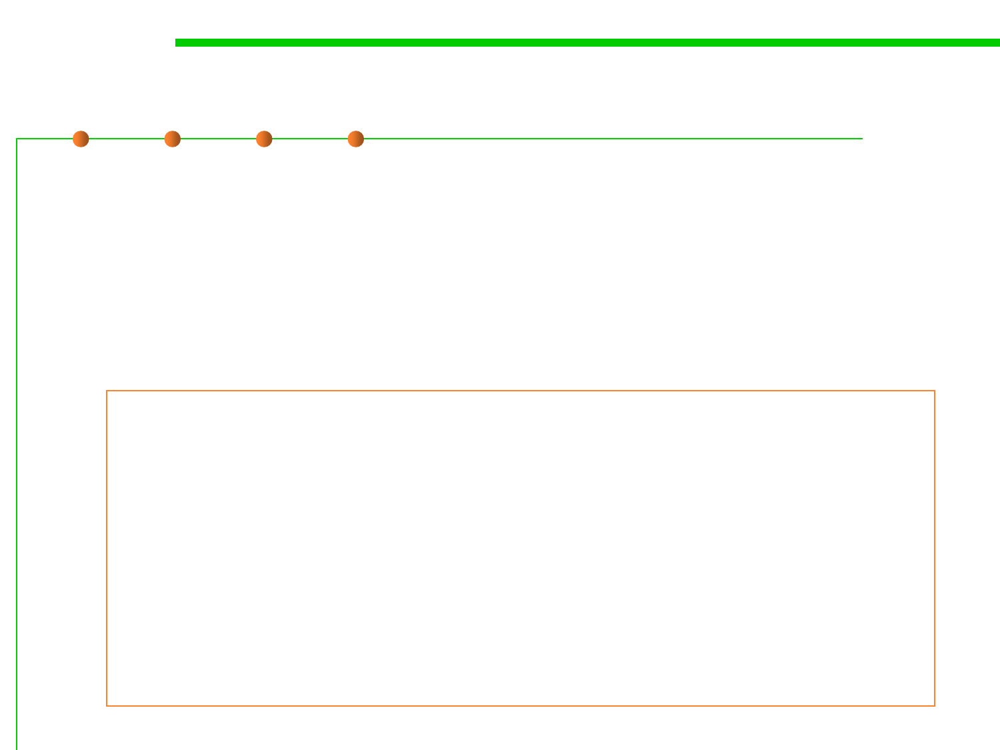
Ways to create a thread
10.1 Concurrency and Thread-Safety
▪ Method1：Subclass Thread
– The Thread class itself implements Runnable, though its run method
does nothing. An application can subclass Thread, providing its own
implementation of run().
▪ To invoke Thread.start() in order to start the new thread.
public class HelloThread extends Thread {
public void run() {
System.out.println("Hello from a thread!");
}
public static void main(String args[]) {
(new HelloThread()).start();
(new HelloThread()).start();
(new HelloThread()).start();
}
}
Ways to create a thread
10.1 Concurrency and Thread-Safety
▪ Method 2: Provide a Runnable object
– The Runnable interface defines a single method, run(), meant to
contain the code executed in the thread. The Runnable object is passed
to the Thread constructor.
▪ To invoke Thread.start() in order to start the new thread.
public class HelloRunnable implements Runnable {
@Override
public void run() {
System.out.println("Hello from a thread!");
}
public static void main(String args[]) {
(new Thread(new HelloRunnable())).start();
}
}

Ways to create a thread
10.1 Concurrency and Thread-Safety
▪ A very common idiom is starting a thread with an anonymous
Runnable, which eliminates the named class. 惯用法：用一个匿名
的Runnable启动一个线程，它避免了创建命名的类
new Thread(new Runnable() {
@Override
public void run() {
System.out.println("Hello from a thread!");
}
}).start();
▪ Create a thread with lambda expression (after JDK 8+)
new Thread(() -> System.out.println("Hello from a thread!")).start();
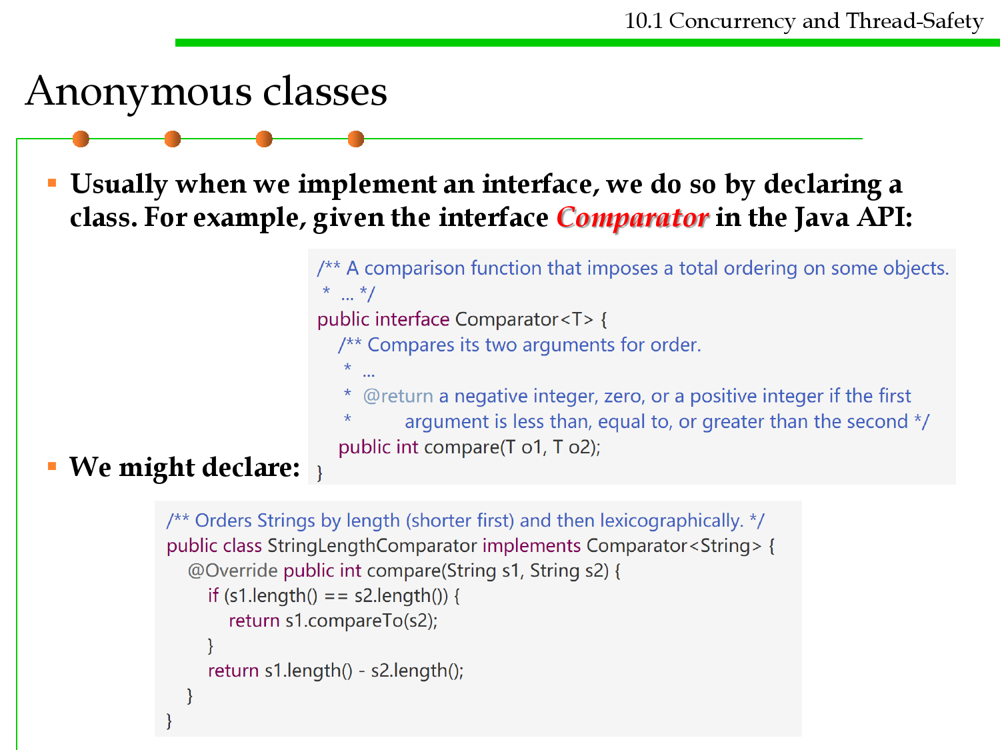
Anonymous classes
10.1 Concurrency and Thread-Safety
▪ Usually when we implement an interface, we do so by declaring a
class. For example, given the interface Comparator in the Java API:
▪ We might declare:
Anonymous classes
10.1 Concurrency and Thread-Safety
▪ One purpose of Comparator is for sorting.
▪ A SortedSet keeps its items in a total order. Without a Comparator,
the SortedSet implementation uses the compareTo method
provided by the objects in the set. 对于可排序集合，如果没有指定
比较器，会采用所保存对象实现的compareTo方法
Anonymous classes
▪ With a Comparator:
10.1 Concurrency and Thread-Safety
▪ If we only intend to use this comparator in this one place, we
already know how to eliminate the variable:
Anonymous classes
10.1 Concurrency and Thread-Safety
▪ An anonymous class declares an unnamed class that implements an
interface and immediately creates the one and only instance of that
class. Compare to the code above:

Anonymous classes
10.1 Concurrency and Thread-Safety
▪ Advantages of anonymous class over named class:
– If we’re only using the comparator in this one piece of code, we’ve reduced its
scope by using an anonymous class. With a named class, any other code could
start using and depending on StringLengthComparator. 明确了使用范围
– A reader no longer has to search elsewhere for the details of the comparator,
everything is right here. 读者不需要寻找定义
▪ Disadvantages:
– If we need the same comparator more than once, we might be tempted to
copy-and-paste the anonymous class. The named class is DRY. 不能复用
– If the implementation of the anonymous class is long, it interrupts the
surrounding code, making it harder to understand. The named class is
separated out as a modular piece. 代码过长时，影响理解
▪ So anonymous classes are good for short one-off implementations of a
method. 匿名类对于短的一次性的方法实现

Software Construction
3 Interleaving and Race Condition


Time slicing
10.1 Concurrency and Thread-Safety
▪ In computer systems that have a single execution core, only one
thread is actually executing at any given moment. 在某时刻，一个
运行核心上只有一个线程可以运行
– Processing time for a single core is shared among processes and threads
through an OS feature called time slicing. 进程/线程等采用OS提供的时间
片机制共享处理时间
▪ Today’s computer systems to have multiple processors or processors
with multiple execution cores. So, how can I have many concurrent
threads with only one or two processors in my computer?
– When there are more threads than processors, concurrency is simulated
by time slicing, which means that the processor switches between threads.
– 当线程数多于处理器数量时，并发通过时间片来模拟，处理器切换处理不
同的线程。

An example of time slicing
10.1 Concurrency and Thread-Safety
▪ Three threads T1, T2, and T3 might be time-sliced on a machine
that has two actual processors.
– At first one processor is running thread T1 and the other is running thread
T2, and then the second processor switches to run thread T3.
– Thread T2 simply pauses, until its next time slice on the same processor or
another processor.
▪ On most systems, time slicing happens unpredictably and
nondeterministically, meaning that a thread may be paused or
resumed at any time. 时间片的使用是不可预知和非确定性的，这意
味着线程可能随时暂停或恢复。
Shared Memory Example
10.1 Concurrency and Thread-Safety
▪ Shared memory could induce subtle bugs !!! 共享内存可能会导致微
妙的错误
▪ Example: a bank has cash machines that use a shared memory
model, so all the cash machines can read and write the same account
objects in memory.
Shared Memory Example
10.1 Concurrency and Thread-Safety
▪ To illustrate what can go wrong, let’s simplify the bank down to a
single account, with a dollar balance stored in the balance variable,
and two operations deposit and withdraw that simply add or
remove a dollar: 假定每次存/取款都处理1美元
▪ Customers use the cash machines to do transactions like this:

Shared Memory Example
10.1 Concurrency and Thread-Safety
▪ Every transaction is just a one dollar deposit followed by a one-
dollar withdrawal, so it should leave the balance in the account
unchanged.
– Throughout the day, each cash
machine in our network is
processing a sequence of
deposit/withdraw transactions.
– 每次交易都是存入1元，取出1元
▪ At the end of the day, regardless of how many cash machines were
running, or how many transactions we processed, we should expect
the account balance to still be 0. 全天交易后，账户余额应为0.
– But if we run this code, we discover frequently that the balance at the end
of the day is not 0. If more than one cashMachine() call is running at the
same time – say, on separate processors in the same computer – then
balance may not be zero at the end of the day. Why not? 当有多个ATM
时，余额却有可能不为0？？

Interleaving 交叉/交错
10.1 Concurrency and Thread-Safety
▪ Suppose two cash machines, A and B, are both
working on a deposit at the same time. Here’s
how the deposit() step typically breaks down into
low-level processor instructions:
▪ When A and B are running concurrently, these
low-level instructions interleave with each other...
低层的指令间存在交叉
Race Condition 竞争条件
10.1 Concurrency and Thread-Safety
▪ The balance is now 1 – A’s dollar was lost!
– A and B both read the balance at the
same time, computed separate final
balances, and then raced to store back
the new balance – which failed to take
the other’s deposit into account.
▪ This is called race condition: the correctness of the program (the
satisfaction of postconditions and invariants) depends on the relative
timing of events in concurrent computations A and B. When this
happens, we say “A is in a race with B.” ,or called “Thread
Interference. 竞争条件：程序的正确性（后置条件和不变性的满足）取
决于并发计算A和B中事件的相对时间
▪ Some interleavings of events may be OK, in the sense that they are
consistent with what a single, nonconcurrent process would produce,
but other interleavings produce wrong answers – violating
postconditions or invariants. 在有些情况下会导致违反后置条件和不变性
10.1 Concurrency and Thread-Safety
Tweaking the code won’t help 调整代码无济于事
▪ All these versions of the bank-account code exhibit the same race
condition.


10.1 Concurrency and Thread-Safety
Tweaking the code won’t help 调整代码无济于事
▪ You can’t tell just from looking at Java code how the processor is
going to execute it.不能仅仅从Java代码中看出处理器将如何执行它
balance += 1;
The problem is that these are not atomic operations. The instruction
might be processed as follows: 本质原因是它们不是原子操作
1. Load balance into a register.
2. Add 1.
3. Move the result back to balance.
▪ The key lesson is that you can’t tell by looking at an expression
whether it will be safe from race conditions 无法通过观察一个表达
式来判断它是否会在竞争状态下安全
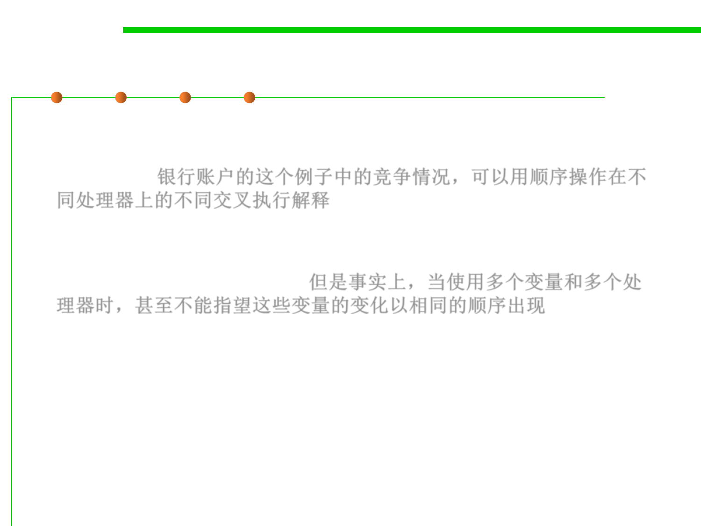
Reordering
10.1 Concurrency and Thread-Safety
▪ The race condition on the bank account balance can be explained in
terms of different interleavings of sequential operations on different
processors. 银行账户的这个例子中的竞争情况，可以用顺序操作在不
同处理器上的不同交叉执行解释
▪ But in fact, when you’re using multiple variables and multiple
processors, you can’t even count on changes to those variables
appearing in the same order. 但是事实上，当使用多个变量和多个处
理器时，甚至不能指望这些变量的变化以相同的顺序出现
Reordering
10.1 Concurrency and Thread-Safety
▪ Looking at the code, answer is set before ready is set, so once
useAnswer sees ready as true, then it seems reasonable that it can
assume that the answer will be 42, right? Not so.

Reordering
10.1 Concurrency and Thread-Safety
▪ The problem is that modern compilers and processors do a lot of things
to make the code fast. One of those things is making temporary copies
of variables like answer and ready in faster storage (processor
registers, or processor caches), and working with them temporarily
before eventually storing them back to their official location in
memory. 出于优化目的，编译器和处理器会复制变量的临时副本在高速
存储中，在存储回正式内存位置之前，基于临时副本工作
▪ The storeback may occur in a different order than the variables were
manipulated in your code. 存储回内存的顺序，可能与代码中操作的变
量顺序不同

Reordering
10.1 Concurrency and Thread-Safety
▪ The processor is effectively creating two temporary
variables, tmpr and tmpa, to manipulate the fields ready and answer:

Message Passing Example
10.1 Concurrency and Thread-Safety
▪ Now not only are the cash machine modules, but the accounts are
modules, too. 不仅自动取款机是处理模块，账户也是处理模块
▪ Modules interact by sending messages to each other. 模块间通过消
息传递进行交互
– Incoming requests are placed in a queue to be handled one at a time.
– The sender doesn’t stop working while waiting for an answer to its
request. It handles more requests from its own queue. The reply to its
request eventually comes back as another message. 消息接收方将收到的消
息形成队列逐一处理(先进先出) ，消息发送者并不停下来等待结果而是继
续执行(异步方式)
10.1 Concurrency and Thread-Safety
Can message-passing solve race condition?
▪ Unfortunately, message passing doesn’t eliminate the possibility
of race conditions. 消息传递的方式并不能消除竞争条件的可能性
▪ Suppose each account supports get-balance and withdraw
operations, with corresponding messages.
– Two users, at cash machines A and B, are both trying to withdraw a dollar
from the same account. A和B首先查询余额，然后取款，避免透支
– They check the balance first to make sure they never withdraw more than
the account holds, because overdrafts trigger big bank penalties.

10.1 Concurrency and Thread-Safety
Can message-passing solve race condition?
▪ The problem is again interleaving, but this time interleaving of
the messages sent to the bank account, rather than the
instructions executed by A and B. 交叉的问题仍然会出现，但是这次
交叉信息发生在银行账户，而不是A和B执行的指令。
– If the account starts with a dollar in it, then what interleaving of messages
will fool A and B into thinking they can both withdraw a dollar, thereby
overdrawing the account?
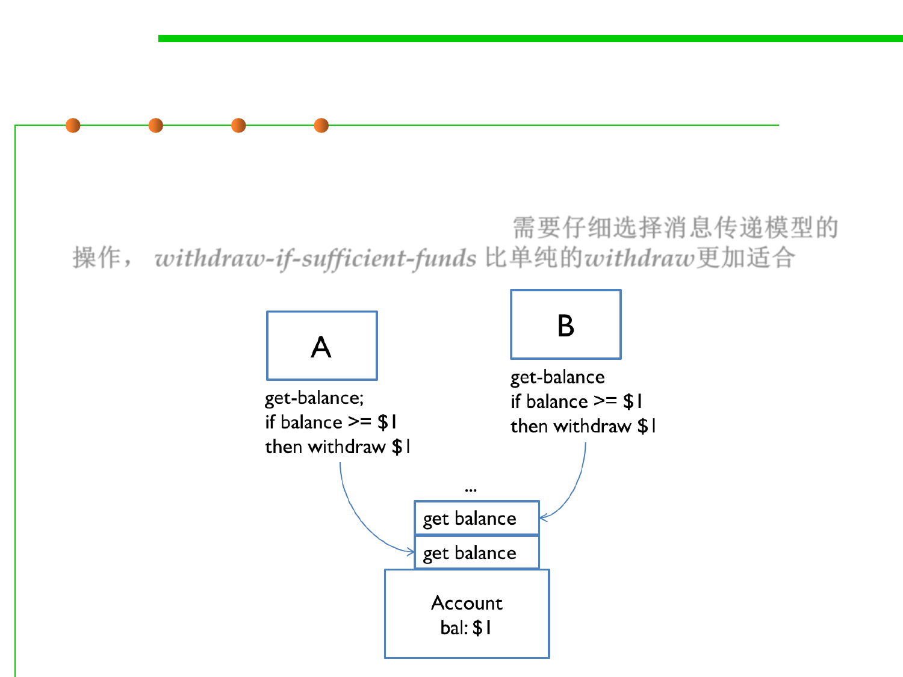
10.1 Concurrency and Thread-Safety
Can message-passing solve race condition?
▪ One lesson here is that you need to carefully choose the operations
of a message-passing model. withdraw-if-sufficient-funds would be
a better operation than just withdraw. 需要仔细选择消息传递模型的
操作， withdraw-if-sufficient-funds 比单纯的withdraw更加适合
happens-before relationship
10.1 Concurrency and Thread-Safety
▪ In computer science, the happened-before relation is a relation
between the result of two events, such that if one event should
happen before another event, the result must reflect that, even if
those events are in reality executed out of order (usually to
optimize program flow). 前一个事件的结果可以被后续的事件获取(
即使出于优化的目的，实际运行中并不是按照指定顺序执行)
▪ In Java, a happens-before relationship is simply a guarantee that
memory written to by statement A is visible to statement B, that is,
that statement A completes its write before statement B starts its
read. 在Java中，采用happened-before机制，保证了语句A对内存的
写入对语句B是可见的，也就是在B开始读数据之前，A已经完成了数
据的写入
▪ This is to ensure Memory Consistency. 确保内存一致性
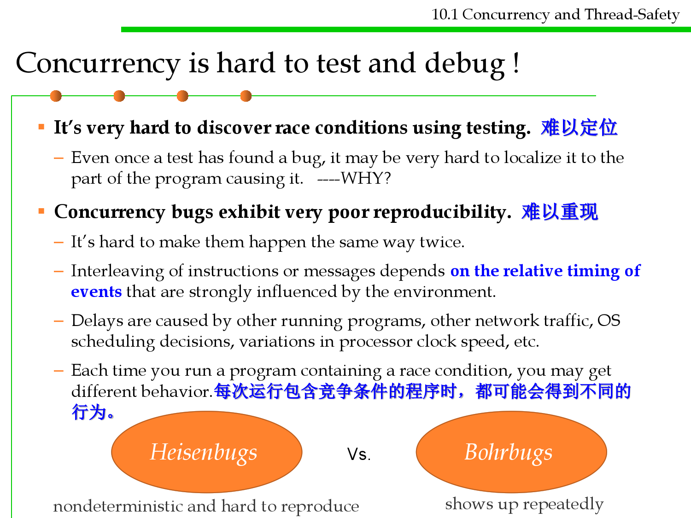
10.1 Concurrency and Thread-Safety
Concurrency is hard to test and debug !
▪ It’s very hard to discover race conditions using testing. 难以定位
– Even once a test has found a bug, it may be very hard to localize it to the
part of the program causing it. ----WHY?
▪ Concurrency bugs exhibit very poor reproducibility. 难以重现
– It’s hard to make them happen the same way twice.
– Interleaving of instructions or messages depends on the relative timing of
events that are strongly influenced by the environment.
– Delays are caused by other running programs, other network traffic, OS
scheduling decisions, variations in processor clock speed, etc.
– Each time you run a program containing a race condition, you may get
different behavior.每次运行包含竞争条件的程序时，都可能会得到不同的
行为。
Heisenbugs
Vs.
Bohrbugs
nondeterministic and hard to reproduce
shows up repeatedly
10.1 Concurrency and Thread-Safety
Concurrency is hard to test and debug !
▪ A heisenbug may even disappear when you try to look at it with
println or debugger! 当尝试用println或调试器查看heisenbug时，甚
至可能会消失！
– The reason is that printing and debugging are so much slower than other
operations, often 100-1000x slower, that they dramatically change the
timing of operations, and the interleaving. Debugger的速度比其他操作慢
▪ So inserting a simple print statement into the cashMachine():
…and suddenly the balance is always 0, as desired, and the bug
appears to disappear. But it’s only masked, not truly fixed. A change in
timing somewhere else in the program may suddenly make the bug
come back. 通常情况下正确，但有时还会出现问题

A short summary
10.1 Concurrency and Thread-Safety
▪ Concurrency: multiple computations running simultaneously
▪ Shared-memory & message-passing paradigms
▪ Processes & threads
– Process is like a virtual computer; thread is like a virtual processor
▪ Race conditions
– When correctness of result (postconditions and invariants) depends on the
relative timing of events
– Multiple threads sharing the same mutable variable without coordinating
what they’re doing.
– This is unsafe, because the correctness of the program may depend on
accidents of timing of their low-level operations.

Software Construction
4 Thread Safety

10.1 Concurrency and Thread-Safety
What does threadsafe mean？
▪ A data type or static method is threadsafe if it behaves correctly
when used from multiple threads, regardless of how those threads
are executed, and without demanding additional coordination from
the calling code. 数据类型或静态方法在多线程中执行时，无论如何执行，不需调
用者做额外的协作，仍然能够行为正确，则称为线程安全的
– “behaves correctly” means satisfying its specification and preserving its
rep invariant; 行为正确意味着满足规格说明和保持不变性
– “regardless of how threads are executed” means threads might be on
multiple processors or time sliced on the same processor;
– “without additional coordination” means that the data type can’t put
preconditions on its caller related to timing, like “you can’t call get()
while set() is in progress.” 不能在前置条件中对调用者增加时间性要求
▪ Remember Iterator? It’s not threadsafe. Iterator ’s specification
says that you can’t modify a collection at the same time as you’re
iterating over it(except using the iterator’s own remove method)..
That’s a timing-related precondition put on the caller, and Iterator
makes no guarantee to behave correctly if you violate it.

Four ways of threadsafe
10.1 Concurrency and Thread-Safety
Don’t share: isolate
mutable state in
individual threads
Don’t mutate: share
only immutable state
If must share mutable
state, synchronize
▪ Confinement. Don’t share the mutable
variable between threads. 限制可变变量的共享
▪ Immutability. Make the shared data
immutable. There are some additional
constraints for concurrent programming.
用不可变的共享变量
▪ Threadsafe data type. Encapsulate the
shared data in an existing threadsafe data
type that does the coordination for you. 将共
享数据封装在线程安全的数据类型中
▪ Synchronization. Use synchronization to
keep the threads from accessing the variable
at the same time. Synchronization is what
you need to build your own threadsafe data
type.使用同步机制来防止线程同时使用变量

Software Construction
Strategy 1: Confinement

Strategy 1: Confinement
10.1 Concurrency and Thread-Safety
▪ Thread confinement is a simple idea:
– You avoid races on mutable data by keeping that data confined to a single
thread. 通过将数据限制在单个线程中，可以避免线程在可变数据上进行竞争
– Don’t give any other threads the ability to read or write the data directly.
▪ Since shared mutable data is the root cause of a race condition,
confinement solves it by not sharing the mutable data.
– Local variables are always thread confined. A local variable is stored in the
stack, and each thread has its own stack. There may be multiple invocations
of a method running at a time, but each of those invocations has its own
private copy of the variable, so the variable itself is confined. 局部变量保存在
线程栈中，每个调用都有自己的变量副本
– If a local variable is an object reference, you need to check the object it points
to. If the object is mutable, then we want to check that the object is confined
as well – there can’t be references to it that are reachable from any other
thread. 局部变量如果是对象的引用，则要确保不能引用任何其他线程可访问
的对象(针对可变对象)

Strategy 1: Confinement
▪ Each execution of
computeFact has its own
n, i, and result variables.
▪ None of the objects they
point to are mutable;
▪ The computeFact
computations proceed
independently,
updating their
respective variables.
10.1 Concurrency and Thread-Safety

Avoid Global Variables
10.1 Concurrency and Thread-Safety
▪ Global static variables are not automatically thread confined. 全局
静态变量不会自动受到线程访问限制
– If you have static variables in your program, then you have to make an
argument that only one thread will ever use them, and you have to
document that fact clearly. 如果使用了全局静态变量，则应说明只允
许一个线程使用它们
▪ Better, you should eliminate the static variables entirely. 在多线程
环境中，取消全局变量
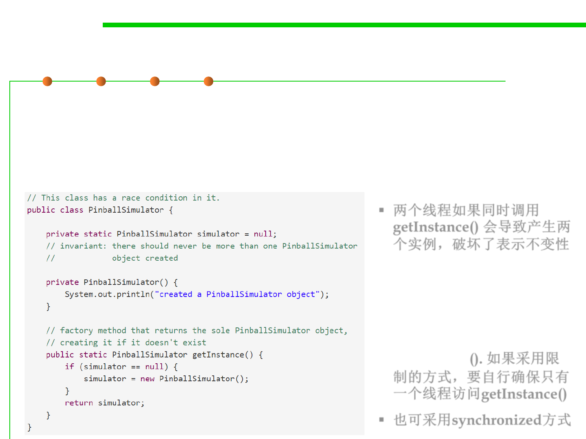
Avoid Global Variables
10.1 Concurrency and Thread-Safety
▪ E.g., singleton pattern
▪ This class has a race in the getInstance() method – two threads
could call it at the same time and end up creating two copies of the
PinballSimulator object, which violates the rep invariant.
▪ 两个线程如果同时调用
getInstance() 会导致产生两
个实例，破坏了表示不变性
▪ To fix this race using the
thread confinement
approach, you would
specify that only a certain
thread is allowed to call
getInstance(). 如果采用限
制的方式，要自行确保只有
一个线程访问getInstance()
▪ 也可采用synchronized方式
Avoid Global Variables
10.1 Concurrency and Thread-Safety
▪ In general, static variables are very risky for concurrency. They
might be hiding behind an innocuous function that seems to have
no side-effects or mutations.一般来说，静态变量对于并行是非常危
险的，它们可能隐藏在似乎没有副作用或改变的无害功能之后
▪ Consider this example:
– This function stores the answers from previous calls in case they’re
requested again. This technique is called memorization.
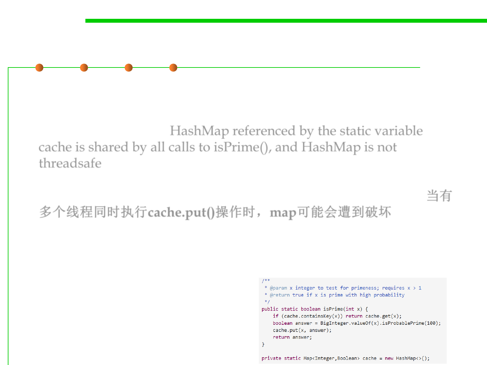
Avoid Global Variables
10.1 Concurrency and Thread-Safety
▪ But now the isPrime method is not safe to call from multiple threads,
and its clients may not even realize it.
▪ The reason is that the HashMap referenced by the static variable
cache is shared by all calls to isPrime(), and HashMap is not
threadsafe. If multiple threads mutate the map at the same time, by
calling cache.put(), then the map can become corrupted in the same
way that the bank account became corrupted in the last reading. 当有
多个线程同时执行cache.put()操作时，map可能会遭到破坏
▪ If you’re lucky, the corruption may cause an exception deep in the
hash map, like a NullPointerException or IndexOutOfBounds-
Exception. But it also may just quietly give wrong answers, as we
saw in the bank account example.

Software Construction
Strategy 2: Immutability
Strategy 2: Immutability
10.1 Concurrency and Thread-Safety
▪ The second way of achieving thread safety is by using immutable
references and data types.使用不可变的引用和数据类型
– Immutability tackles the shared-mutable-data cause of a race condition
and solves it simply by making the shared data not mutable. 不可变解决了
因为共享可变数据造成的竞争，并简单地通过使共享数据不可变来解决它
▪ A variable declared final is unreassignable, so a variable declared
final is safe to access from multiple threads. final变量不允许再赋
值，所以声明为final的变量可以安全地从多个线程访问。
– You can only read the variable, not write it.
– Because this safety applies only to the variable itself, and we still have to
argue that the object the variable points to is immutable. 因为这种安全性
只适用于变量本身，仍然必须确保变量指向的对象是不可变的。
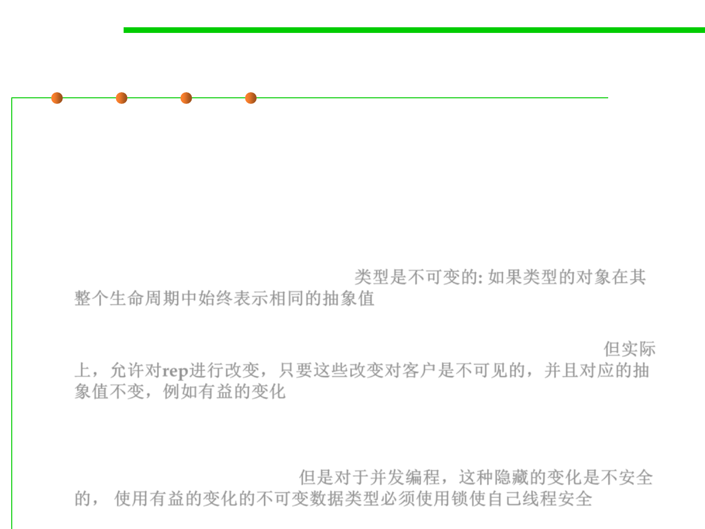 
Strategy 2: Immutability
10.1 Concurrency and Thread-Safety
▪ Immutable objects are usually also threadsafe.
▪ We say “usually” here because our current definition of
immutability is too loose for concurrent programming.
▪ Recall immutability in Chapter 3.3
– A type is immutable if an object of the type always represents the same
abstract value for its entire lifetime. 类型是不可变的: 如果类型的对象在其
整个生命周期中始终表示相同的抽象值
– But that actually allows the type the freedom to mutate its rep, as long as
those mutations are invisible to clients, such as beneficent mutation.但实际
上，允许对rep进行改变，只要这些改变对客户是不可见的，并且对应的抽
象值不变，例如有益的变化
▪ For concurrency, this kind of hidden mutation is not safe.
– An immutable data type that uses beneficent mutation will have to make
itself threadsafe using locks. 但是对于并发编程，这种隐藏的变化是不安全
的， 使用有益的变化的不可变数据类型必须使用锁使自己线程安全
Strategy 2: Immutability
▪ Recall the examples in 3.3
10.1 Concurrency and Thread-Safety

10.1 Concurrency and Thread-Safety
Stronger definition of immutability
▪ In order to be confident that an immutable data type is threadsafe
without locks, we need a stronger definition of immutability:
– No mutator methods 没有改变数据的操作
– All fields are private and final 所有的字段均为private 和 final
– No representation exposure 没有表示泄露
– No mutation whatsoever of mutable objects in the rep – not
even beneficent mutation 表示中的任何可变对象都不能变化
▪ If you follow these rules, then you can be confident that your
immutable type will also be threadsafe.
10.1 Concurrency and Thread-Safety
Stronger definition of immutability
▪ Don't provide "setter" methods — methods that modify fields or objects
referred to by fields.
▪ Make all fields final and private.
▪ Don't allow subclasses to override methods.
– The simplest way to do this is to declare the class as final. 类声明为final
– A more sophisticated approach is to make the constructor private and construct
instances in factory methods.更复杂的方法是使构造函数为私有，并使用工厂方法
构造实例。
▪ If the instance fields include references to mutable objects, don‘t allow
those objects to be changed:如果成员变量包含对可变对象的引用，不要允许更改
这些对象
– Don't provide methods that modify the mutable objects.不提供修改可变对象的方法
– Don‘t share references to the mutable objects. 不要共享对可变对象的引用
• Never store references to external, mutable objects passed to the constructor; if necessary,
create copies, and store references to the copies.不存储传递给构造函数的外部可变对象的引用
• Similarly, create copies of your internal mutable objects when necessary to avoid returning
the originals in your methods.避免在方法返回值中包含对可变对象的引用

Software Construction
Strategy 3: Using Threadsafe Data
Types
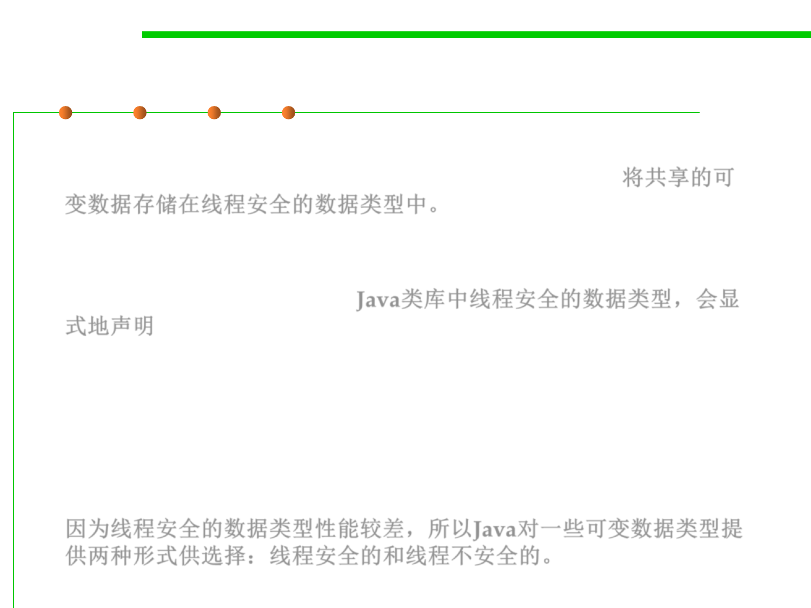
10.1 Concurrency and Thread-Safety
Strategy 3: Using Threadsafe Data Types
▪ The third major strategy for achieving thread safety is to store
shared mutable data in existing threadsafe data types. 将共享的可
变数据存储在线程安全的数据类型中。
▪ When a data type in the Java library is threadsafe, its documentation
will explicitly state that fact. Java类库中线程安全的数据类型，会显
式地声明
▪ It’s become common in the Java API to find two mutable data types
that do the same thing, one threadsafe and the other not.
▪ The reason is what this quote indicates: threadsafe data types
usually incur a performance penalty compared to an unsafe type.
因为线程安全的数据类型性能较差，所以Java对一些可变数据类型提
供两种形式供选择：线程安全的和线程不安全的。
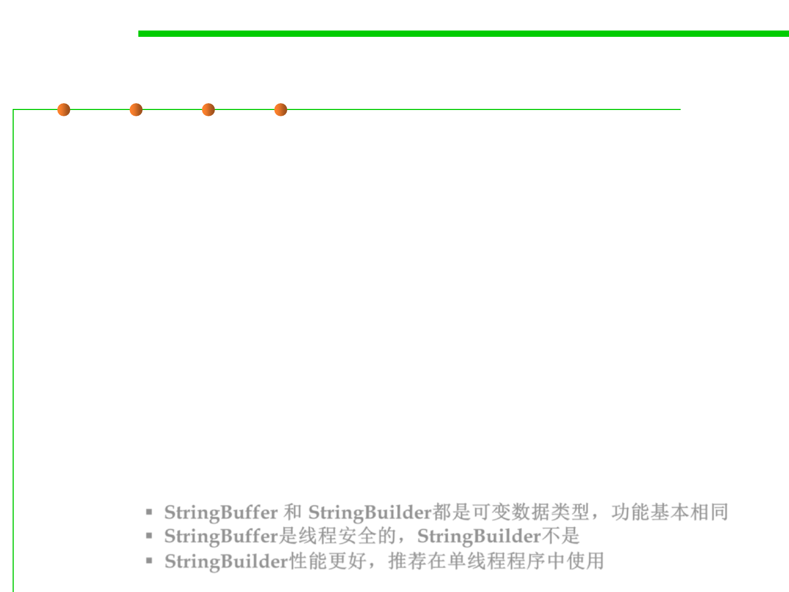 
10.1 Concurrency and Thread-Safety
An example: StringBuffer vs. StringBuilder
▪ [StringBuffer is] A thread-safe, mutable
sequence of characters. A string buffer is
like a String, but can be modified. At
any point in time it contains some
particular sequence of characters, but
the length and content of the sequence
can be changed through certain method
calls.
▪ String buffers are safe for use by
multiple threads. The methods are
synchronized where necessary so that
all the operations on any particular
instance behave as if they occur in some
serial order that is consistent with the
order of the method calls made by each
of the individual threads involved.
▪ [StringBuilder is] A mutable sequence of
characters. This class provides an API
compatible with StringBuffer, but with
no guarantee of synchronization.
▪ This class is designed for use as a drop-
in replacement for StringBuffer in places
where the string buffer was being used
by a single thread (as is generally the
case).
▪ Where possible, it is recommended that
this class be used in preference to
StringBuffer as it will be faster under
most implementations.
▪ StringBuffer 和 StringBuilder都是可变数据类型，功能基本相同
▪ StringBuffer是线程安全的，StringBuilder不是
▪ StringBuilder性能更好，推荐在单线程程序中使用
Threadsafe Collections
10.1 Concurrency and Thread-Safety
▪ The collection interfaces in Java – List , Set , Map – have basic
implementations that are not threadsafe.
– The implementations namely ArrayList , HashMap , and HashSet , cannot be
used safely from more than one thread. 这些不是线程安全的类型
▪ Just like the Collections API provides wrapper methods that make
collections immutable, it provides another set of wrapper methods to
make collections threadsafe, while still mutable. Java提供了线程安全
的Collections类型版本。
– These wrappers effectively make each method of the collection atomic with
respect to the other methods. 确保方法是原子的
– An atomic action effectively happens all at once – it doesn’t interleave its
internal operations with those of other actions, and none of the effects of the
action are visible to other threads until the entire action is complete, so it
never looks partially done. 原子方法：动作的内部操作不会同其他操作交叉，
不会产生部分完成的情况
private static Map<Integer,Boolean> cache =
Collections.synchronizedMap(new HashMap<>());

Threadsafe wrappers
10.1 Concurrency and Thread-Safety
▪ Wrapper implementations delegate all their real work to a specified
collection but add extra functionality on top of what this collection
offers. 包装的实现是将所有的实际工作委托给指定的容器，但在容器
的基础上添加额外的功能。
▪ This is an example of the decorator pattern. 装饰者模式的一个例子
▪ These implementations are anonymous; rather than providing a
public class, the library provides a static factory method. 不提供
public class, 只提供静态工厂方法
▪ All these implementations are found in the Collections class, which
consists solely of static methods.
private static Map<Integer,Boolean> cache =
Collections.synchronizedMap(new HashMap<>());
▪ The synchronization wrappers add automatic synchronization
(thread-safety) to an arbitrary collection. 同步包装将自动同步（线程安全）
添加到指定集合

Threadsafe wrappers
10.1 Concurrency and Thread-Safety
▪ Wrappers:
– public static <T> Collection<T> synchronizedCollection(Collection<T> c);
– public static <T> Set<T> synchronizedSet(Set<T> s);
– public static <T> List<T> synchronizedList(List<T> list);
– public static <K,V> Map<K,V> synchronizedMap(Map<K,V> m);
– public static <T> SortedSet<T> synchronizedSortedSet(SortedSet<T> s);
– public static <K,V> SortedMap<K,V> synchronizedSortedMap(SortedMap<K,V> m);
▪ Usage:
List<Type> c = Collections.synchronizedList(new ArrayList<Type>());
synchronized(c) { // to be introduced later (the 4-th threadsafe way)
for (Type e : c)
foo(e);
}
A few points
10.1 Concurrency and Thread-Safety
▪ Don’t circumvent the wrapper. 不要绕开包装类,统一采用包装类的形式
– Make sure to throw away references to the underlying non-threadsafe
collection, and access it only through the synchronized wrapper.确保抛弃对底
层非线程安全容器类的引用，并只通过同步的包装类来访问它。
– The new HashMap is passed only to synchronizedMap() and never stored
anywhere else.新的HashMap只传递给synchronizedMap，并且永远不会存储
在其他地方
– The underlying collection is still mutable, and code with a reference to it can
circumvent immutability. 因为底层的容器仍然是可变的，引用它的代码可以
规避不变性，失去了包装的意义

A few points
10.1 Concurrency and Thread-Safety
▪ Iterators are still not threadsafe.
– Even though method calls on the collection itself ( get(), put(), add()
, etc.) are now threadsafe, iterators created from the collection are still not
threadsafe.
– So you can’t use iterator() , or the for loop syntax:
for (String s: lst) { ... }
// not threadsafe, even if lst is a synchronized list wrapper
– The solution to this iteration problem will be to acquire the collection’s
lock when you need to iterate over it. 解决方案将是在需要迭代collection
时获取它的锁

A few points
10.1 Concurrency and Thread-Safety
▪ Atomic operations aren’t enough to prevent races: the way that you
use the synchronized collection can still have a race condition.原子操
作不足以完全防止竞争
▪ Consider this code, which checks whether a list has at least one
element and then gets that element: 例如检查列表是否至少有一个元
素，然后获取该元素
if (!lst.isEmpty()) {String s = lst.get(0); ... }
▪ Even if you make lst into a synchronized list, this code still may
have a race condition, because another thread may remove the
element between the isEmpty() call and the get()call.
A few points
10.1 Concurrency and Thread-Safety
▪ The synchronized map ensures that containsKey(), get(), and
put() are now atomic, so using them from multiple threads won’t
damage the rep invariant of the map.
▪ But those three operations can now interleave in arbitrary ways with
each other, which might break the invariant that isPrime needs from
the cache: If the cache maps an integer x to a value f , then x is prime
if and only if f is true.
▪ If the cache ever fails this invariant, then we might return the wrong
result.
▪ Synchronied map 能够保证各操作是原子的，但是操作间的交叉仍然会破坏
不变性

A short summary
10.1 Concurrency and Thread-Safety
▪ Three major ways to achieve safety from race conditions on shared
mutable data:
– Confinement: not sharing the data.
– Immutability: sharing, but keeping the data immutable.
– Threadsafe data types: storing the shared mutable data in a single
threadsafe datatype.
▪ Safe from bugs.
– We’re trying to eliminate a major class of concurrency bugs, race
conditions, and eliminate them by design, not just by accident of timing.